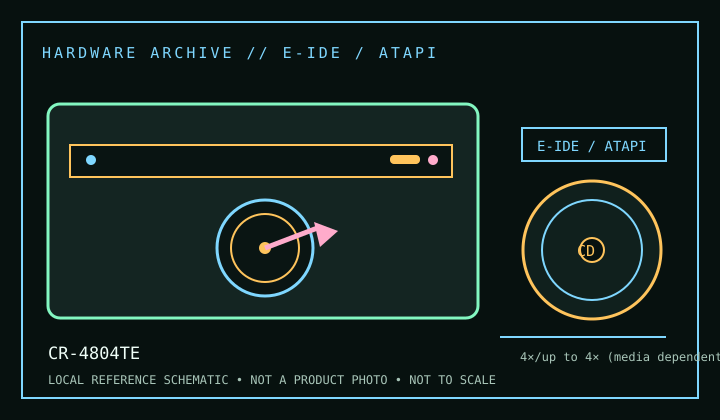

[ CD-R AND CD-RW DRIVES // IDENTIFIED MODEL ]
Mitsumi CR-4804TE
Internal Enhanced IDE/ATAPI CD-R/RW recorder rated 4× CD-R write, up to 4× CD-RW rewrite and up to 24× CD read. This is the CR-4804TE internal model; do not confuse it with USB/external CR-4804TU.

IDENTIFICATION: Confirm the manufacturer label, complete model suffix, interface and firmware revision against the cited manual before installation or archival use. Ratings are maximums; actual performance depends on media, mode, host and software.
Documented specifications
| Subcategory | CD-R and CD-RW drives |
|---|---|
| Exact model | CR-4804TE |
| CD-R write | 4× |
| CD-RW rewrite | up to 4× (media dependent) |
| CD-ROM / CD read | up to 24× |
| Recorded/read formats | Writes CD-R and CD-RW; reads CD-ROM, CD-ROM XA, CD-DA, CD-i, Video CD, CD-Extra and Photo CD formats listed for the series. CD-UDF/packet-written discs require a compatible packet filesystem/application. |
| Recording modes | Disc-at-Once, Track-at-Once, multisession and packet-writing modes appear in period CR-series documentation. Check supported disc type: CD-RW speed can vary with standard/high-speed media and firmware/software recognition. |
| Interface / mechanics | Enhanced IDE/ATAPI, internal 5.25-inch half-height mechanism. Use the correct master/slave/cable-select jumper, 40-pin IDE ribbon and power lead. |
| Host and operating-system compatibility | Requires an EIDE/ATAPI host and a compatible optical/authoring driver. Period Mitsumi CR-series software and packet writing target legacy OS environments; an IDE-to-USB adapter may not forward all writer commands. Check jumper position and supported media before troubleshooting the application. |
| Firmware / revision notes | Use CR-4804TE firmware only; CR-4804TU and other Mitsumi CR-family variants are not interchangeable by name alone. Record firmware, media brand/type and write mode when testing. Observe rated media compatibility, especially for CD-RW rewrite speeds. |
Compatibility & preservation notes
- Requires an EIDE/ATAPI host and a compatible optical/authoring driver. Period Mitsumi CR-series software and packet writing target legacy OS environments; an IDE-to-USB adapter may not forward all writer commands. Check jumper position and supported media before troubleshooting the application.
- Use CR-4804TE firmware only; CR-4804TU and other Mitsumi CR-family variants are not interchangeable by name alone. Record firmware, media brand/type and write mode when testing. Observe rated media compatibility, especially for CD-RW rewrite speeds.
- For an imaging or recording session, log the exact drive and firmware, interface/controller, operating system, application version, media identifier, selected mode and any read/verification errors. Keep checksummed image copies and logs.
- Handle discs at the edge or center hole and store in cases in a cool, dry place away from direct sunlight. Avoid adhesive labels, abrasive cleaning and undocumented solvents or polishing.
Read support is not write support. A format listed for this drive does not guarantee every disc revision or copy-protection scheme will work.
Sources
- Mitsumi CR-series CD-R/RW drive manual, Internet ArchiveArchived manual for the CR-series; confirm model-specific pages and suffix against the physical CR-4804TE label.
- Mitsumi CR-series installation manual, ManualsLib archiveArchived CR-series installation guidance; verify that the relevant pages cover the CR-4804TE suffix.
- Library of Congress — CD-R and DVD-R/RW longevityArchival recordable-disc care guidance, not a device qualification.